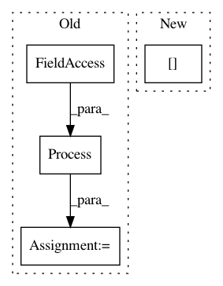

449e900ef018a775f2827dd3e591900c761004ab,perfzero/lib/benchmark.py,BenchmarkRunner,run_benchmark,#BenchmarkRunner#,112
Before Change
// will not affect the execution of other benchmark method
// This is a walkaround before we fix all memory leak issues in TensorFlow
queue = multiprocessing.Queue()
process = multiprocessing.Process(target=benchmark_method_runner.run,
args=(benchmark_method,
harness_info,
site_package_info,
self.root_output_dir,
self.config, queue))
process.start()
process.join()
method_has_exception, method_execution_time, succeeded, output_dir = queue.get() // pylint: disable=line-too-long
has_exception |= method_has_exception
After Change
trial_key = "trial_{}".format(trial_id)
has_exception |= trial_has_exception
self.benchmark_execution_time[trial_key] = trial_execution_time
benchmark_success_results[trial_key] = trial_success_results
benchmark_output_dirs[trial_key] = trial_output_dirs
finally:
if self.config.tpu_parameters is not None:
In pattern: SUPERPATTERN
Frequency: 3
Non-data size: 4
Instances
Project Name: tensorflow/benchmarks
Commit Name: 449e900ef018a775f2827dd3e591900c761004ab
Time: 2020-06-16
Author: 53017143+sganeshb@users.noreply.github.com
File Name: perfzero/lib/benchmark.py
Class Name: BenchmarkRunner
Method Name: run_benchmark
Project Name: vatlab/SoS
Commit Name: ac676981e6909c31167c3493275221e8ad34f48a
Time: 2017-03-02
Author: ben.bog@gmail.com
File Name: sos/sos_executor.py
Class Name: Base_Executor
Method Name: run
Project Name: mne-tools/mne-python
Commit Name: c9fa690f0d551f4290872e1a4fba69d25ea2f6a3
Time: 2019-04-23
Author: teon.brooks@gmail.com
File Name: mne/realtime/tests/test_lsl_client.py
Class Name:
Method Name: test_lsl_client